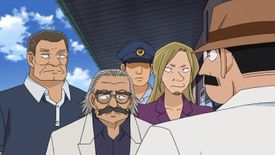
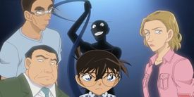
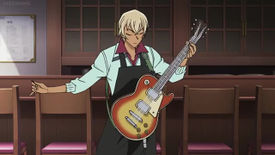
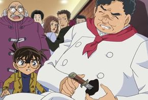
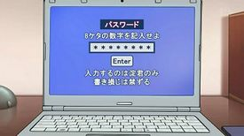
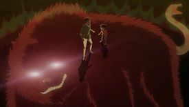
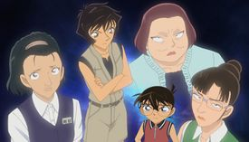

Plot Episodes
The Mystery Sinking in the Midsummer Pool
📖 e787 e788The conversation about Masumi and magicians suddenly triggered a memory in Ran's mind. When Ran tried to ask Masumi if they met before.. Ran turns around one more time to see Masumi talking to Sera Mary, who Ran thinks she had also seen before.
Three First Discoverers
📖 Ep792 Ep793
Conan asks Haibara about Rum. She reveals that she never met him, but she has hear three different descriptions of him. He should either be a strong man, a feminine-looking man or a old man. She also recalls that he had a characteristic, that everyone in the organization agreed on.. He lost his eye in an accident and now one of his eyes is a prosthesis.
The Actress Blogger's Locked Room Case
📖 e814 e815..Afterwards, Superintendent Hyoue Kuroda arrives on the crime scene and announces that since Superintendent Kiyonaga Matsumoto has been promoted as Senior Superintendent of the Tokyo Metropolitan Police Department, he will be taking his place. Conan and Haibara are shocked, as Kuroda tells Conan that he's looking forward to working with him.
Ramen So deadly Good2
📖 e827 e828
[about the relation between Sera Masumi and Yumi's boyfiend: Haneda Shuukichi]
The Unfriendly Girls Band
📖 e836 e837
Introduction of Scotch.
the past of Furuya Rei in the organization, with Akai Shuukichi and Scotch.
some kind of implicit talk between Sera and Rei.
The Detective Boys in a Grove
📖 e844
..Haibara rubs mascara off of her eye, and Conan sees that the smeared mascara makes her face look like that of that girl Mary who stays with Masumi.
The Marriage Registration's Password
📖 e849 e850
Kohji was mentioned by Shukichi to Yumi Miyamoto on the phone. Shukichi says that he respected Kohji, and Kohji's motto was "one should stick with one's original plan". After Shukichi and Yumi's talk, Haibara asks Conan whether he knows the name Kohji Haneda. Conan answers that Kohji was a talented shogi player, but he died under mysterious circumstances when he went to the United States to participate in a chess tournament. Haibara recognizes the name Kohji Haneda as one that was on the list of people killed by APTX 4869.
Conan and Heiji's Nue Legend
📖 e872
The fact that Azusa was an imposter in The Betrayal's Stage is confirmed when Azusa says that she didn't go to the concert hall. However, only Conan and Amuro himself knows that it was actually Vermouth in disguise. Conan thinks that since Vermouth bothered to investigate, the Black Organization must really be interested in the cipher left by Kōji Haneda seventeen years ago.
The Blind Spot in the Dressing Room
📖 e878 e879
Conan thinks about how Masumi didn't know the difference between how Americans and Japanese count and how Europeans count, and connects it to other instances of Masumi saying and doing things that someone who lived in America wouldn't..
..Conan realizes that these instances show that Masumi actually lived in the United Kingdom, not in the United States, in Britain..
..and finally remembers something. He and Ran did meet Masumi before, several years ago, alongside other people.